RECOVERED FROM PAULDRAPER-MUSIC.CO.UK (SINGLES.HTML) • AUTHENTIC SLEEVE ARCHIVE
Mansun Singles
& Numbered EPs.
From the self-financed 1995 Sci-Fi Hi-Fi 7" vinyl of Take It Easy Chicken through all 14 numbered Parlophone EPs, 4 UK Top 10 hits, the Brixton fan-club 7", and 2004's Slipping Away. Complete with authentic sleeve scans from Richard Murray's archive.
Complete EP Sleeve Gallery (1995 — 2004)
Click any sleeve to inspect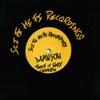
Debut 7"Take It Easy Chicken
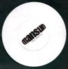
Fierce PandaSkin Up Pin Up
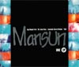
ONE EPEgg Shaped Fred
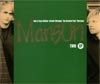
TWO EPTake It Easy Chicken
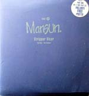
THREE EPStripper Vicar
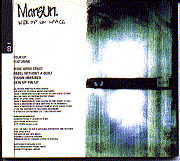
FOUR EPWide Open Space
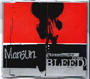
FIVE EPShe Makes My Nose Bleed
SIX EPTaxlo$$
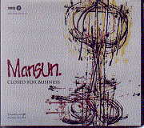
SEVEN EPClosed For Business
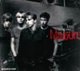
EIGHT EPLegacy (#7)
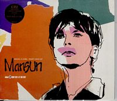
NINE EPBeing A Girl
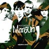
TEN EPNegative
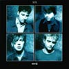
ELEVEN EPSix
TWELVE EPI Can Only Disappoint U
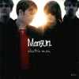
THIRTEEN EPElectric Man
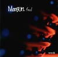
FOURTEEN EPFool
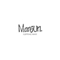
Final SingleSlipping Away

Signed PromoTaxlo$$ Remixes
| Cover | EP / Cat # | Single / EP Title | Release Date | UK Chart | Full Tracklisting & B-Sides (CD1 / CD2 / Vinyl) |
|---|---|---|---|---|---|
SCI-001 |
Take It Easy Chicken (Debut 7") | Sep 1995 | Indie |
Sci-Fi Hi-Fi Records (1,000 copies): Take It Easy Chicken · Astrid (early version of Flourella). | |
NING 13 |
Skin Up Pin Up (7" Vinyl) | Nov 1995 | Indie |
Fierce Panda Records (Long Live The New Flesh): Skin Up Pin Up · Flourella. | |
ONE EP |
Egg Shaped Fred | May 1996 | #37 |
Egg Shaped Fred · Ski Jump Nose · Lemonade Secret Drinker · Thievingitch. | |
TWO EP |
Take It Easy Chicken | Jun 1996 | #32 |
Take It Easy Chicken · Drastic Sturgeon · The Greatest Pain · Moronica · Rebel Without A Quilt. | |
THREE EP |
Stripper Vicar | Sep 1996 | #19 |
CD1: Stripper Vicar · The Edge · Duelling Banjos · CD2: Stripper Vicar · The Most To Gain · The Gods Himself · No One Knows Us · Live EP: Live at The Leadmill Sheffield. | |
FOUR EP |
Wide Open Space | Nov 1996 | #15 |
CD1: Wide Open Space · Rebel Without A Quilt · Skin Up Pin Up · CD2: Wide Open Space · Lemonade Secret Drinker · The Holy Blood And The Holy Grail · Remix: Paul Oakenfold Perfecto Mix. | |
FIVE EP |
She Makes My Nose Bleed | Jan 1997 | #9 ★ |
CD1: She Makes My Nose Bleed · The Most To Gain · The Chad Who Loved Me (Live) · CD2: She Makes My Nose Bleed · Flourella · Check Under The Bed · Wide Open Space (Acoustic). | |
SIX EP |
Taxlo$$ | Apr 1997 | #15 |
CD1 (CDR6465): Taxlo$$ · The World's Still Open · Theimpendingcollapseofthemanor · CD2: Taxlo$$ (Gaudi Mix) · Ski Jump Nose (Live) · Wide Open Space (Acoustic) · Taxlo$$ (Paul Oakenfold Mix). | |
SEVEN EP |
Closed For Business | Oct 1997 | #10 ★ |
CD1: Closed For Business · K.I.S.S.I.N.G. · Everyone Must Win · CD2: Closed For Business · The World's Still Open · Realising · Look At These Idiots. | |
EIGHT EP |
Legacy | Jul 1998 | #7 ★ |
CD1: Legacy · Can't Afford To Die · SpasmOfJudgement · CD2: Legacy · When The Wind Blows · Check Under The Bed · GSOH. | |
NINE EP |
Being A Girl (Part One) | Aug 1998 | #13 |
CD1: Being A Girl (Pt 1) · I Care · Been Here Before · CD2: Being A Girl (Pt 1) · Hideout · What It's Like To Be Hated. | |
TEN EP |
Negative | Oct 1998 | #27 |
CD1 (CDRS6508): Negative · When The Wind Blows · King Of Beauty · CD2 (CDR6508): Negative · I Deserve What I Get · Take It Easy Chicken (Live). | |
MANSUN001 |
Taxlo$$ (Live Brixton '98 Fan Club 7") | Dec 1998 | Fan Club |
Injection-moulded 7" vinyl recorded live at London Brixton Academy (23/10/1998): Taxlo$$ (Live) · Everyone Must Win (Live). | |
ELEVEN EP |
Six | Feb 1999 | #16 |
CD1: Six (Single Version) · Church Of The Drive Thru Elvis · But The Trains Run On Time · CD2: Six · Fade Soon · The Unrest Cure. | |
TWELVE EP |
I Can Only Disappoint U | Jul 2000 | #8 ★ |
CD1 (CDRS6544): I Can Only Disappoint U · Decisions, Decisions · Repair Man · CD2 (CDR6544): I Can Only Disappoint U · My Idea Of Fun · Golden Stone. | |
THIRTEEN EP |
Electric Man | Nov 2000 | #23 |
CD1: Electric Man · The Drifter · The Apartment · CD2: Electric Man · Here Comes Avoiding The Issue · Live Tracks at Trentham Gardens. | |
FOURTEEN EP |
Fool | Jan 2001 | #28 |
CD1 (CDRDJ6553): Fool · Welcome To The North · CD2: Fool · Poor Created Man · Love Is... (Instrumental). | |
KLEPTO-01 |
Slipping Away | Sep 2004 | #55 |
From Kleptomania (4th Album Sessions): Slipping Away · Keep Telling Myself (Live Manchester University 2002) · Slipping Away (Video). |